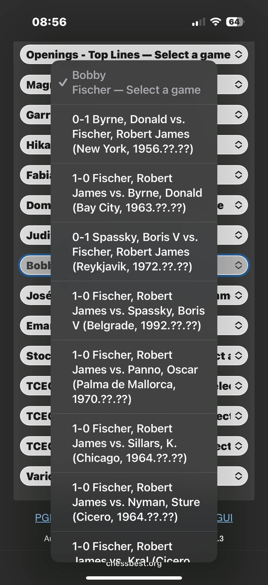
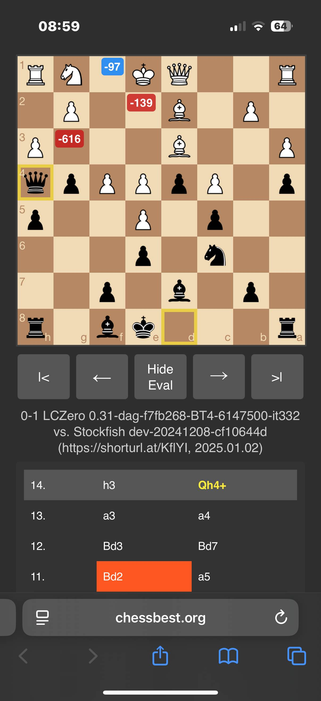

Welcome to the ChessBest Interface
Play, Review, Learn with Powerful Analysis
ChessBest.org is an interactive chess analysis board that helps you review famous games or analyze your own.
It’s fast, clear, and packed with insights from the powerful ChessDB engine database.
Whether you’re a beginner or a grandmaster, the interface is designed to be intuitive and informative for all chess levels.
Under the hood, ChessBest taps into 48+ billion positions many evaluated at depth 50+ by Stockfish/ChessDB.
In other words, you have supercomputer-level analysis at your fingertips for many moves!
The result is an experience where you can instantly see the best moves, understand key alternatives, and learn from each position.

(Click on image to view full size.)
Load a Game from the Library
Ready to explore a game? Click the Games! button to open the game library.
You’ll find a list of categories including top opening lines, world champions, recent masters, and even computer engine battles.
(Click on image to view full size.)
Select any category (for example, Magnus Carlsen) and you’ll see a dropdown list of games for that category.
Simply pick a game from the list to load it on the board.
(Click on image to view full size.)
Once you choose a game, the chessboard will load the starting position and the move list (PGN notation) will appear.
Now you can start stepping through the moves to replay the game or analyze key moments.
You can always return to the game list to load another game at any time.
Want to analyze your own games or positions? ChessBest has you covered:
use the Input button to paste a PGN text or FEN string (toggle the FEN|pgn switch as needed),
or hit New to start from an empty board.
You can also Save your analysis as a PGN file or Load a PGN from your device, and the Copy button lets you copy the current PGN moves to your clipboard.
Curated Game Collections
The built-in library features a curated selection of games for study and enjoyment.
Each player category contains a range of their most instructive and famous games (around 18 per player), hand-picked to highlight interesting positions and ideas.
It’s a great way to learn different styles or relive historic matches.
For example, under Bobby Fischer you can find classic encounters like Fischer’s “Game of the Century” win against Donald Byrne (1956), among others.
Under modern champions like Carlsen, you'll see recent top-level games that showcase their skill.
There are even sections for engine-vs-engine showdowns!

(Click on image to view full size.)
If you’re curious about AI battles, check out the Stockfish vs. other engines category – it includes thrilling games between top chess engines from events like TCEC.
You can watch how engines outmaneuver each other in those high-level contests, move by move.
(Click on image to view full size.)
We’ve aimed to provide a little something for everyone in these collections.
(For more details on how these games were selected, see our PGN Picks? page.)
Navigating Moves and Game History
Once a game is loaded, you can step through the moves using the navigation buttons below the board.
Use |< to jump to the beginning, ← to go back one move, → to go forward one move, and >| to skip to the game’s end.
You can also click on any move in the move list to jump directly to that point in the game.
As you navigate, pay attention to the board: after each move, ChessBest shows engine evaluations for the next moves in the position.
Several colored badges will appear on the board, each indicating how good a particular move would be if played from the current position.
This allows you to immediately compare the move that was played in the game to the engine’s top recommendations.
If you’re not at the final move of the game, the interface also gives you a sneak peek of what happens next:
you'll see a yellow ring on the piece that is about to move and another yellow ring on the square it’s headed to.
This next-move preview (two small yellow rings on the board) helps you follow the flow of the game without any guesswork.
Visual Markers: Best Moves, Alternatives, and Previews
ChessBest’s visual markers make it easy to understand each position at a glance. Here’s what the colors and symbols mean:
- Blue badge: The engine’s top move (best overall choice in the position).
- Green badge: A strong move that maintains an advantage for the side to move.
- Red badge: A weaker move that would lead to a disadvantage for the side to move.
- Yellow rings: Preview markers indicating the next move in the game (one ring on the moving piece, one on its destination square).
- Light-green dot: Indicates an opening-book move—it wasn’t freshly calculated by the engine, but pulled from your book database. In human PGNs it flags a known theoretical opening move.
The number on each colored badge is the engine’s evaluation after that move would be played (in centipawns, where +100 is roughly a one-pawn advantage for White).
These badges are essentially “what-if” insights—they show how good or bad each option is, rather than evaluating the current static position.
(Click on image to view full size.)
Branching Off and Returning to the Main Line
What if you want to explore a different line from what the game played? With ChessBest, you can!
Simply click on any engine suggestion badge (for example, the blue best-move badge) to “branch off” into that variation.
The board will play out that move and you can continue stepping forward along this new line, effectively exploring a hypothetical scenario.
While you’re exploring a branched line, the original game moves are still saved in the background.
To return to the main game, just click on the game’s title (the header above the move list, which shows the players’ names or the game title).
This will bring you back to the exact position where you left the main line.
When you return, you’ll notice the move from which you branched is now highlighted in orange in the move list –
this orange marker is a reminder of where you diverged from the main line.
In the example below, the move 11.Bd2 is highlighted, indicating that was the branch point.
This way, you can easily continue your analysis from the right spot, without losing track of the original game.

(Click on image to view full size.)
Feel free to explore side lines as much as you like – you can always get back to the main game instantly, and the orange highlight will be there to guide you.
Settings and Customization
Every chess player has personal preferences, and ChessBest’s settings let you tailor the interface to your liking.
Click the Settings button (on the bottom right) to open the settings panel, where you can adjust options such as:
- Show top moves: how many engine top moves (with badges) to display on the board at once (e.g., 3, 5, or more).
- Show next-move preview: toggle the yellow next-move indicators on or off.
- Evaluation method: choose the source of engine evaluations (Direct from ChessDB’s server, or via a Proxy relay). Default is direct mode with fallback to proxy for reliability.
- History height: the vertical size of the move history panel (Small, Medium, or Large), i.e., how many moves are visible at once.
- Font size & Piece size: adjust the text size of the move list and the size of the pieces on the board.
- Badge notation: switch the notation shown on the badges (for example, show numeric scores or dot notation).
- Main background & theme: change the color scheme of the app. The default is a Dark Gray background, but you can experiment with other background colors or switch to a Light theme.
The settings panel also includes a Reset Settings button at the bottom if you want to revert everything to default.
All the default settings are optimized for a great experience, so you can start using ChessBest immediately, but it's nice to know you have these options to tweak your setup.
(Click on image to view full size.)
Fast, Fun, and Flexible – On Any Device
ChessBest works great on both desktop and mobile browsers, so you can enjoy fast exploration, learning, and game review on any device.
The interface is responsive and touch-friendly: you can tap squares and moves on a phone just as easily as you click them with a mouse on a computer.
There’s no software to install and no waiting for engine calculations – everything is instant and at your fingertips.
Whether you’re quickly checking an opening line on your lunch break or sitting down to deeply analyze a classic game, ChessBest provides a smooth, informative experience.
We hope this tool helps you explore chess more deeply and have fun while learning. Now jump in and try it out!
Desktop Interface Overview
While ChessBest is fully optimized for mobile, here's how the interface looks on a desktop PC:
(Click on image to view full size.)